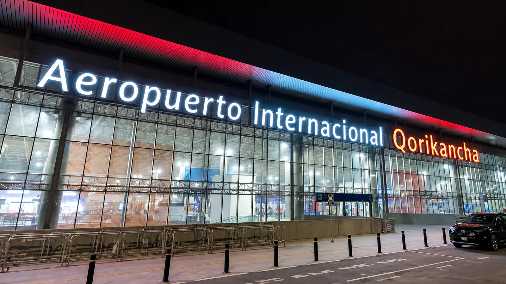

Horarios de vuelo
Salidas y llegadas del Aeropuerto Qorikancha (código CUZ) en tiempo real. Marca la estrella ☆ de tu vuelo para seguirlo: verás la cuenta regresiva y te avisaremos si cambia su estado o su puerta.
Mis vuelos
Tablero de vuelos
Hora de Cusco
| Hora | Vuelo | Destino | Puerta | Estado | Seguir |
|---|
No hay vuelos que coincidan con tu búsqueda.
Información referencial que se actualiza cada 30 segundos. Ante cambios de última hora, consulta con tu aerolínea.
Aerolíneas que operan en Qorikancha · ver mostradores y contactos
Preguntas frecuentes
¿Con cuánta anticipación debo llegar al aeropuerto?
Se recomienda llegar 2 horas antes en vuelos nacionales y 3 horas antes en vuelos internacionales.
¿Qué hago si mi vuelo aparece como "Demorado"?
Consulta directamente con el counter de tu aerolínea o revisa el estado en su página web, ya que los tiempos en esta tabla son referenciales.
¿Hasta qué hora puedo hacer el check-in?
El check-in en counter cierra 45 minutos antes de la hora de salida programada; el check-in web suele cerrar antes.
¿Qué pasa si mi vuelo se cancela?
La aerolínea debe reprogramarte en el siguiente vuelo disponible o gestionar tu devolución, según su política de cancelación.